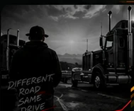
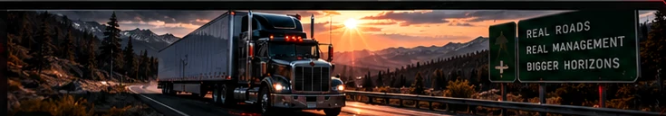

C++ CLASS STRUCTURE
Truck, Driver, and Load classes power the simulation alongside dedicated management systems.
BUILTGame Development Student | C++ Developer | Project Builder
Former truck driver, now on a mission to build what's next.
I'm a Game Development student at Full Sail University, learning, creating, and growing as a software developer. I bring discipline, real-world experience, and a passion for problem-solving from the road to the world of code.
I'm Clayton Miller, a Game Development student at Full Sail University and an aspiring software developer.
After years in trucking, I chose a new route built with code, creativity, and opportunity. I'm passionate about building games, understanding complex systems, and turning ideas into real projects.
↗ MORE ABOUT MY JOURNEY
PROGRAMMING
VERSION CONTROL
DEVELOPMENT
ANALYTICAL THINKING
PROJECT WORKFLOW
TruckzSim
A TRUCKING SIMULATION GAME IN DEVELOPMENT
TruckzSim combines my background in trucking with my passion for game development. The project now includes a working C++ management simulation with fleet operations, dispatching, finances, fuel, driver Hours of Service, repairs, and persistent company saves. The longer-term vision is a larger driving and logistics experience.
EXPLORE PROJECT
Truck, Driver, and Load classes power the simulation alongside dedicated management systems.
BUILTManage trucks and drivers, assign and complete loads, track company revenue, expenses, and payroll.
BUILTLong-term goal: an immersive trucking world and deeper progression.
FUTURE VISIONI'm always open to connecting with other developers, creative minds, and people excited about technology and games.
My GitHub profile is the best place to explore my public work and connect for now.
VISIT MY GITHUBProfessional email and LinkedIn can be added once confirmed.
PROJECT FILE // 001
What's been built, what was challenging, and where the project is heading.
Built the Truck, Driver, Load, and Company core, then expanded it with dispatch, fuel, Hours of Service, repair, payroll, banking, save/load, and validation systems. The final project builds in Visual Studio.
The challenge was turning a large simulation into independent, connected systems without breaking existing features. I refactored the original application into focused classes, tested each system as it grew, and resolved Windows-specific compiler and linker errors in the console-color feature.
I learned how class design, systematic debugging, testing, GitHub Issues, and dev-to-main pull requests support a working project. Next, I want to expand the simulation toward a fully interactive trucking world.
THE ROAD SO FAR //
Trucking taught me to be accountable, solve problems quickly, and keep complex operations moving. I'm bringing that same mindset into software development, where every line of code is a chance to build something better.
At Full Sail University, my focus is on C++, object-oriented programming, debugging, Git, and learning how professional development workflows turn ideas into working software. Beyond my coursework, I also enjoy exploring web applications and practical tools.
LET'S KEEP BUILDING